변경 전
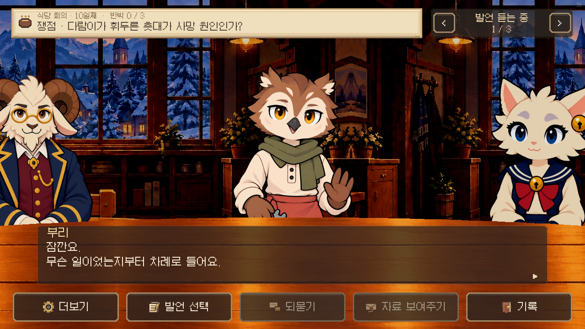
변경 후

로컬 SDK 실제 실행. 비교 전은0.19.48, 비교 후는0.19.49. 최초 회의 조건을 설정한 뒤 클릭으로 이어간 흐름이다. 제단·전체 좌석 화면은 별도 렌더러 조건 설정이며 자연 진행 검증으로 계산하지 않았다.

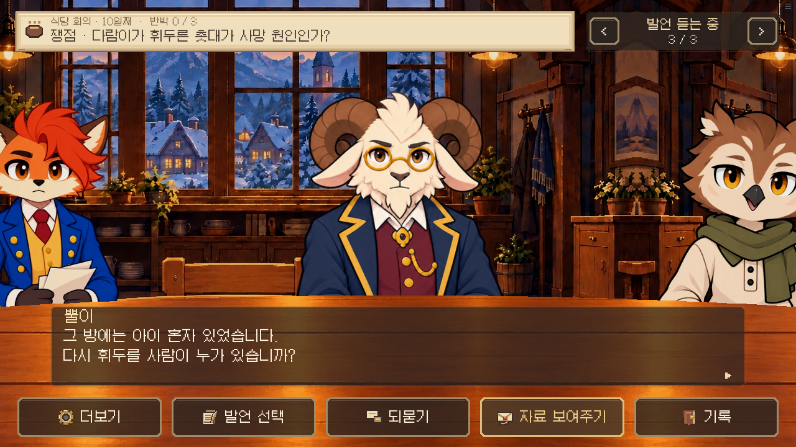
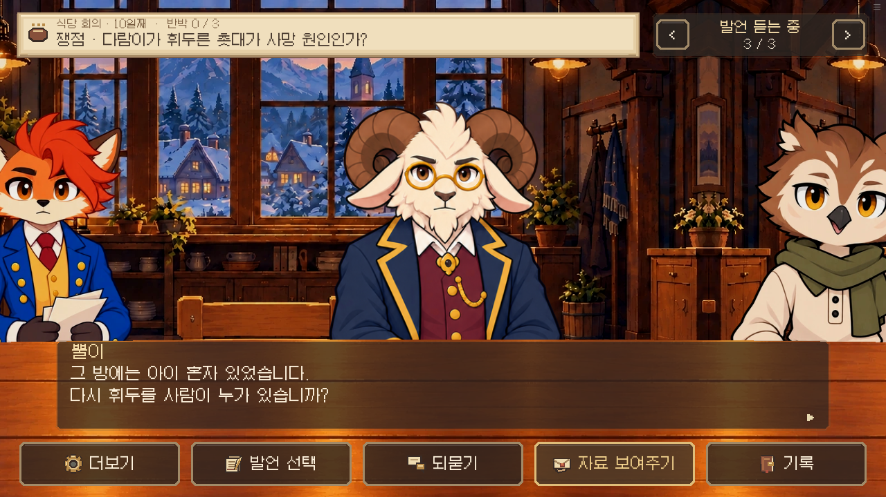
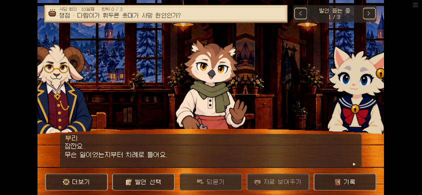
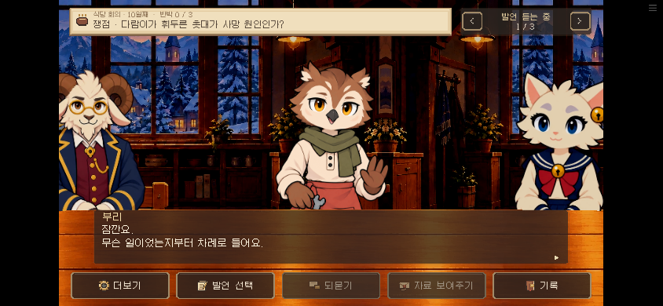
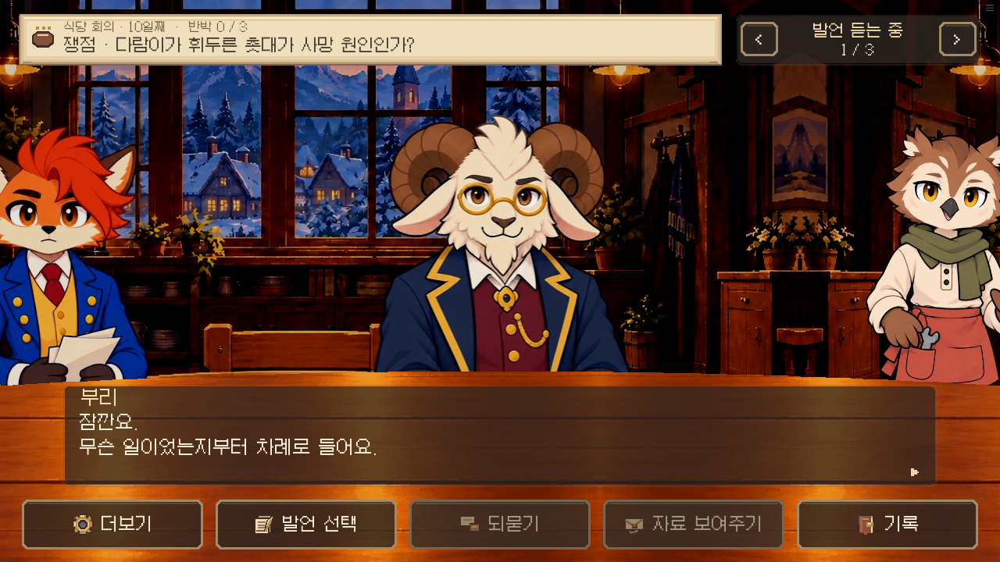
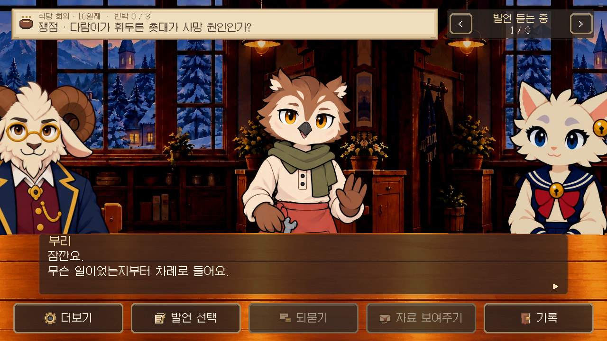


최초 조건: 10일 회의, 전체 자료 보유, C1 입증 상태. 이후 장면 상태 주입 없이 실제 조작으로38개 전환을 기록했다. 검수 범위 · 입력과 화자·카메라 기록
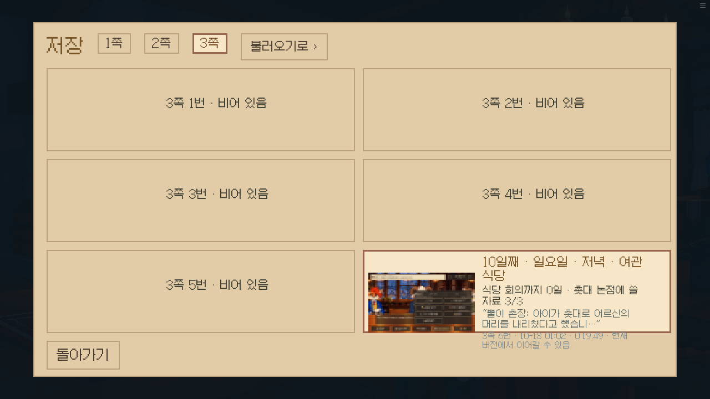
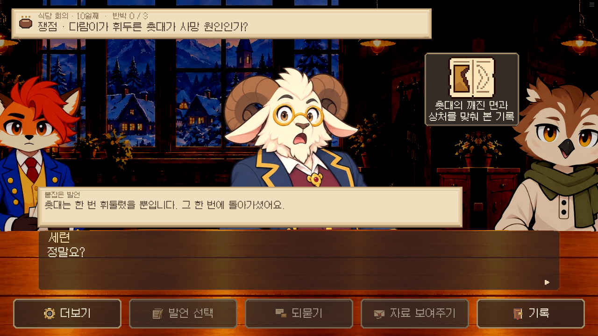
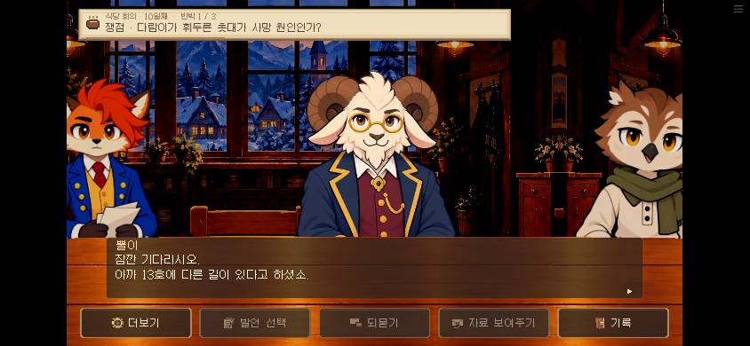
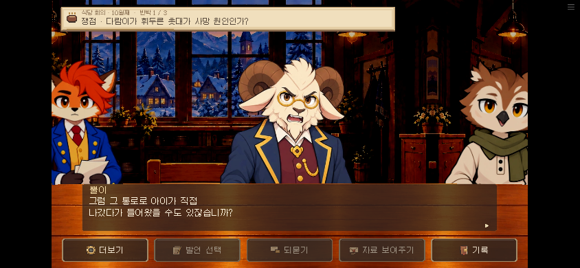
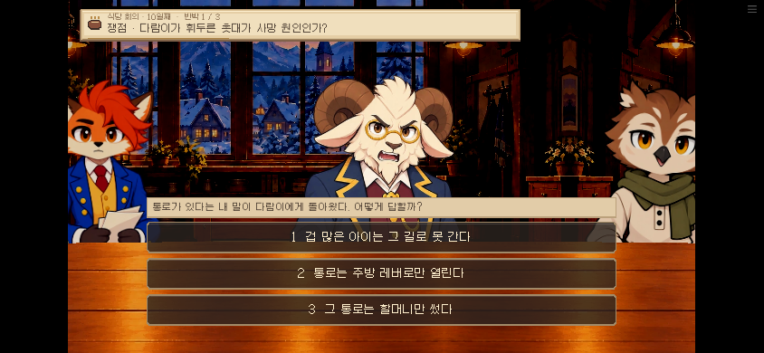
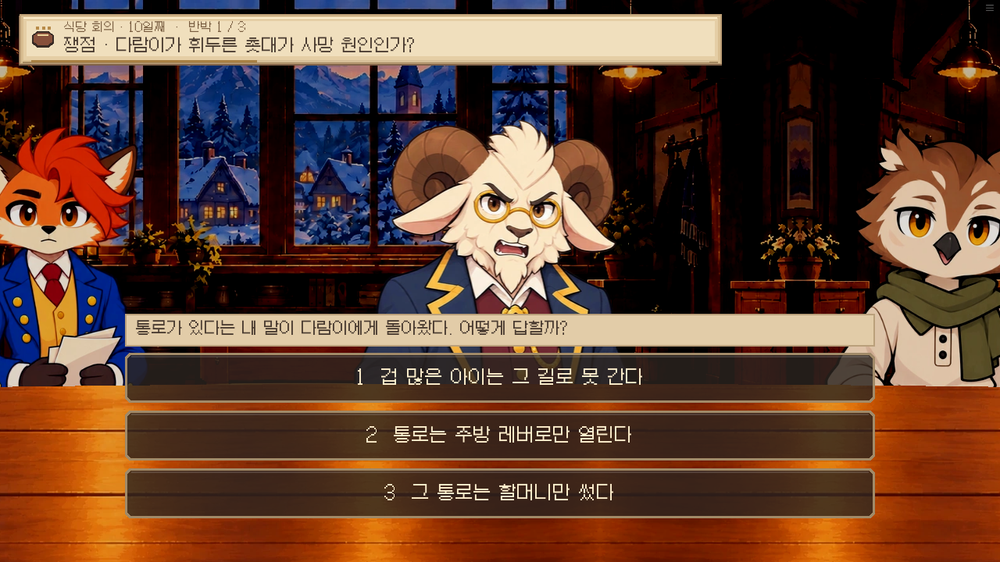
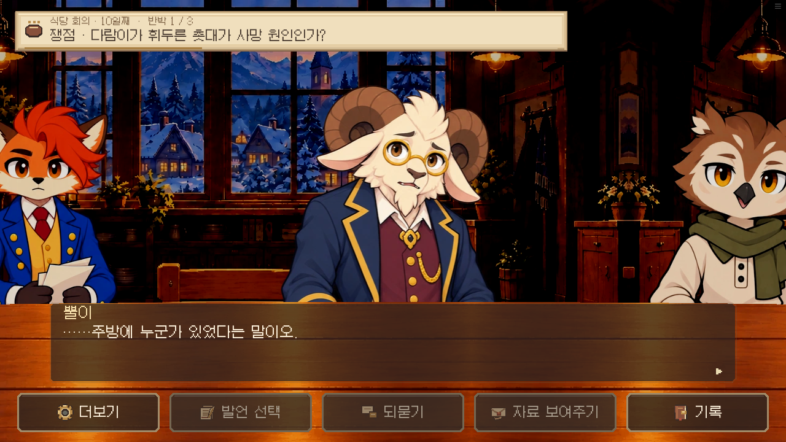
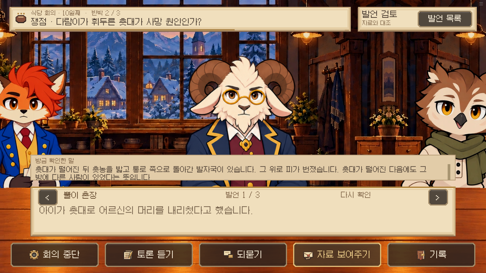